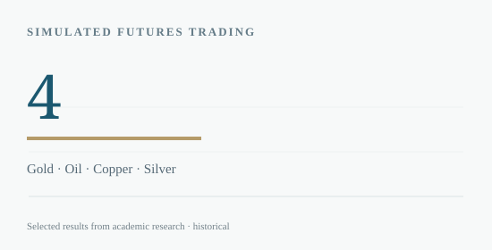

← BACK TO RESEARCH LIBRARY
Markets & Risk / 2025
Commodity Futures Trading & Risk Review
A documented simulated-trading case study across four liquid commodity futures.
USC · FBE 559Individual contribution · Group course
THE RESEARCH QUESTION
How can macro views be translated into a testable futures strategy while managing concentration and drawdown risk?
Applied macroeconomic views to gold, crude oil, copper and silver futures, tracked individual simulated P&L and reviewed execution and downside exposure.

METHODOLOGY
How the analysis was conducted
Used directional positions in gold (long), crude oil (short), copper (short) and silver (short). Documented reasons for entry, event-sensitive execution, reported P&L by contract and risk controls, including a stated maximum of five concurrent positions.
KEY FINDINGS
What the evidence suggests
- The reported gold long position contributed +$58,260 in the course trading exercise.
- Crude oil, copper and silver shorts generated losses, highlighting timing and directional risk.
- Post-trade review emphasized the limits of macro conviction without adequate risk management and position sizing.
SCOPE & LIMITATIONS
Course simulation, not verified real-money investment performance. P&L figures are taken from the individual-contribution slides in a group presentation.
SOURCE
Based on the student group trading summary, FBE 559 (USC, 2025), pages 7–9. Full academic paper available below. Third-party licensed datasets and employer materials are not redistributed.